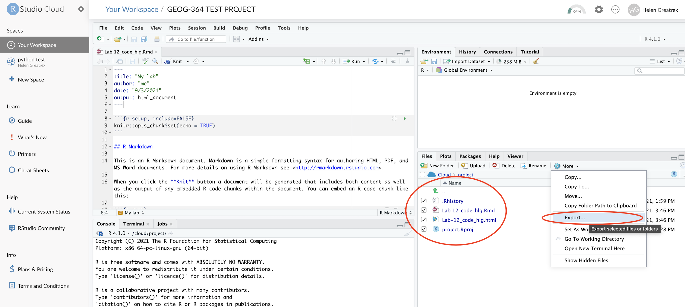
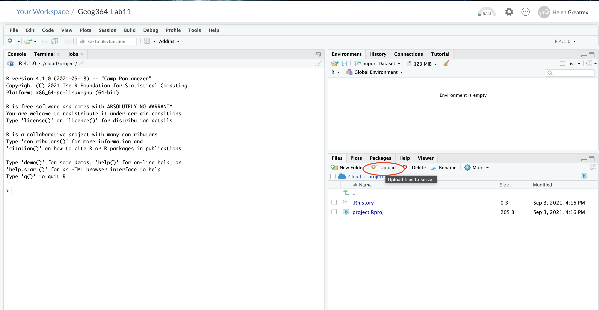
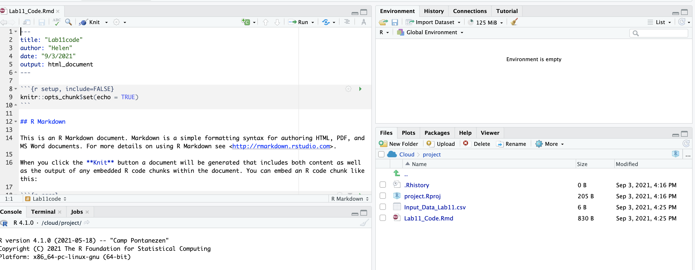

Tutorial 1: R, R-Studio & R-Studio Cloud
GEOG-364 - Spatial Analysis
Tutorial 1 Contents
This tutorial is all about the R and R-Studio programmes, along with the things you will need to complete your lab
Tutorial 1A: What are R and R studio?
There are two programmes needed to run R on your computer, “R” and “R-Studio”. R teaches the computer to “speak” in the language R. R-studio is just a nicer place to edit code.
What is R
R is a programming language commonly used by statisticians and scientists across the world. By a “programming language”, I mean it is a collection of commands that you can type into the computer in order to analyse and visualise data.
As described by Noli Brazil:“R is a free, open source statistical programming language. It is useful for data cleaning, analysis, and visualization. R is an interpreted language, not a compiled one. This means that you type something into R and it does it.”
The easiest way I find to think about R is that it is literally a language, like Spanish or Hindi, that is spoken by your computer. Learning R means learning vocabulary and grammar in order to communicate. It also means it will get easier with experience and practice..
What happens when you install R?
When you install R on your computer, you are essentially instantly teaching your computer to “speak in R” with some very basic Notepad-like software where you can enter commands.”*
The basic R console. You write in blue, the computer replies in black. The > means it is waiting for a command
What is R-Studio?
More recently, R-studio has been designed as a piece of software to make it easier to programme in R.
It’s Microsoft Word is compared to notepad; many more options and things to click. For example, you can easily see help files, run code, see your output and edit interactive visualisations. R-Studio also allows us to make interactive documents called R-Markdown files.
R-studio is much more sophisticated
Tutorial 1B. Accessing R and R-studio
For this course you will need BOTH R and R studio. There are three ways we can access these
- Installing R/R-studio on your computer (Recommended)
- Using R-studio cloud as an alternative (Recommended)
- Lab computers and the TLT server (NOT recommended)
1B.a. Installing R/R-studio
R is free and having it on your own computer will give you a lot more freedom to complete the labs, especially if there is social distancing later in the semester.
If you already have R and/or R-Studio, it is very important you update both of them to the most recent version. The easiest way to do this is to first uninstall both programmes, then reinstall fresh. If you are worried this will affect another class, chat with Dr Greatrex before starting out..
To install R:
On a windows machine, go to: https://cloud.r-project.org/bin/windows/base/ , download R v 4.1.1 and double click to install (click next through all the options)
On a Mac, go to: https://cloud.r-project.org/bin/macosx/ , download the R v 4.1.1 package and double click to install (click next through all the options)
On anything else: https://cloud.r-project.org/bin
To install R-Studio:
Go to the website here: https://www.rstudio.com/products/rstudio/download/#download and download the version for your operating system.
For Windows Users: Sometimes R asks you to download something called RTools. You can ignore this request as it is not relevant to our course. If you really want the warning to go away, you can download Rtools here https://cran.r-project.org/bin/windows/Rtools/ Follow the instructions closely and ask if you need support.
Your R AND R-Studio MUST be up to date, or things wont’ work. R should be a minimum of 4.1.0 (2021-05-18) – “Camp Pontanezen” and R-studio a minimum of Version 1.4.1717
1B.b. Using R-studio cloud
You can access both R and R-studio online without installing anything.
You can access R-studio Cloud anywhere and I believe is free for the first 25hrs each month, then $5 a month. You also get a total of 50 projects which should be fine given we only have 8 labs and 1 project.
- To do this, make an account at https://rstudio.cloud/plans/free.
You can also easily move files from the Cloud to your Desktop, so for example, you can work on the cloud during lab hours and on your desktop at home. You can find instructions in Tutorial A3. Transfer betweeen Cloud & Desktop
1B.c. Lab computers and the TLT server
The geography lab computers should have the most up to date version of R, but sometimes the “packages” you will later install fill up your U-drive. Equally, the version of R outside the geography lab room is going to be out of date and will likely cause issues. Saying that, R and R-Studio are R installed on them & we have made it work in the past.
There is also a free Penn State server called the TLT server (also a second called the science server). In both cases R studio is out of date, which will likely cause issues.
If you go down these routes, proceed with care!
Tutorial 1C. Cloud - Desktop Transfers
R-Projects mean you can complete your labs either on your laptops, or on R-Studio Cloud, then easily transfer between the two.
To go from R-Studio Cloud to R-Desktop
- On your computer, go to your GEOG364 folder (or make one!)
- Make a subfolder named for that lab e.g. Lab 1
- On your browser, open your project in R-studio cloud
- In the files quadrant/tab, select the checkbox of all the files.
- Click Export. This will zip them into a folder. Save that into your lab folder
- Unzip. Double click the project.RProj file to reopen your lab on your computer

To go from R-Desktop to R-Studio Cloud
- On your browser, in R studio cloud make a new project and name it something relevant
- Click the upload button
- Navigate to the lab folder on your computer. Choose ONLY the .Rmd file(s) and any input data as appropriate (RStudio-Cloud will make the rest)
- Click on the .Rmd file name in the files in RStudio and you’re good to go



Website created and maintained by Helen Greatrex. Website template by Noli Brazil